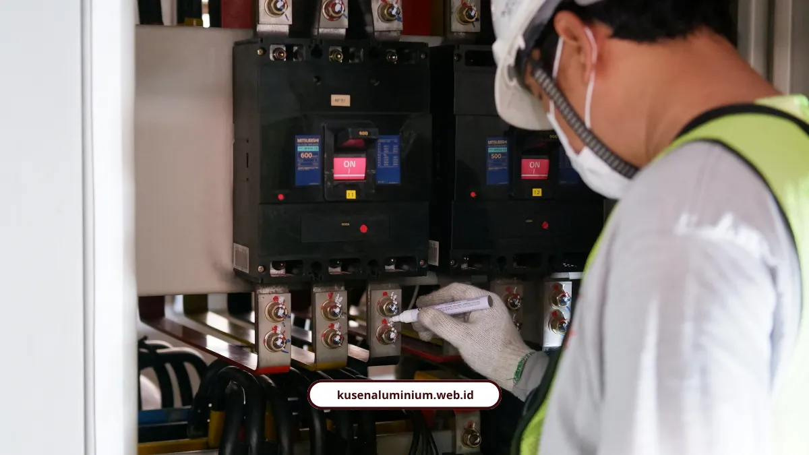

Teknisi Mitra Surabaya, Terverifikasi dan Bergaransi

📌 Ringkasan Inti
Teknisi mitra Surabaya kami mengantongi sertifikat kompetensi berbasis SKKNI, menjangkau 31 kecamatan di Surabaya Raya, dan menjamin setiap pengerjaan instalasi kusen maupun kelistrikan dengan garansi tertulis:
- Seluruh teknisi mitra wajib lolos uji kompetensi SKKNI, menguasai Job Safety Analysis, dan menerapkan standar K3 ber-APD lengkap.
- Cakupan layanan terintegrasi meliputi instalasi kusen aluminium presisi, troubleshooting kelistrikan, EV wall charger, MEP, hingga CCTV.
- Transparansi biaya dengan tarif jasa panggilan mulai Rp75.000 serta paket instalasi CCTV lengkap yang kompetitif.
- Bebas ongkos transportasi untuk jarak di bawah 10 km, serta subsidi transpor terjangkau ke wilayah aglomerasi Sidoarjo dan Gresik.
- Dilengkapi kartu garansi pengerjaan resmi hingga 60 hari untuk memastikan kepuasan dan ketenangan pemilik bangunan.
- Apa Syarat Teknisi Mitra Kami Sebelum Diterjunkan ke Lapangan?
- Layanan Apa Saja yang Bisa Ditangani Teknisi Mitra?
- Berapa Kisaran Tarif Jasa Teknisi Mitra Kami?
- Apa Bukti Nyata Kepuasan Klien di Surabaya?
- Apakah Teknisi Mitra Juga Menangani Instalasi Kusen Aluminium?
- Teknisi Bersertifikat: Investasi Keamanan dan Kerapian Hunian
Teknisi mitra Surabaya kami sudah mengantongi sertifikat kompetensi berbasis SKKNI, menjangkau 31 kecamatan, dan setiap pengerjaan dilengkapi garansi resmi tertulis.
Salah satu ketakutan terbesar pemilik rumah itu bukan soal harga, tapi soal siapa yang bakal masuk ke rumahnya dan apakah hasil kerjanya bisa dipertanggungjawabkan. Makanya kami tidak asal comot tukang, tapi punya standar verifikasi ketat untuk semua teknisi mitra.
Apa Syarat Teknisi Mitra Kami Sebelum Diterjunkan ke Lapangan?
Syaratnya wajib punya Sertifikat Kompetensi sesuai SKKNI, paham Job Safety Analysis, dan menggunakan APD lengkap saat bekerja.
Standar yang kami terapkan mengacu pada:
- UU No. 1 Tahun 1970 tentang Keselamatan Kerja
- UU No. 30 Tahun 2009 tentang Ketenagalistrikan
- Permenaker No. 12 Tahun 2015 tentang K3 Listrik di Tempat Kerja
- SKKNI No. 304 Tahun 2019 dan SKKNI No. 109 Tahun 2018
"Program pelatihan berbasis kompetensi bagi teknisi instalasi listrik disusun mengacu pada Standar Kompetensi Kerja Nasional Indonesia agar lulusan pelatihan sesuai dengan kebutuhan kompetensi dari dunia usaha maupun dunia industri."
Standar kerja teknisi mitra ini juga yang menjamin hasil instalasi kusen kami presisi di lapangan, sejalan dengan proses fabrikasi yang sudah dijelaskan di jasa kusen aluminium melayani Surabaya.

Layanan Apa Saja yang Bisa Ditangani Teknisi Mitra?
Cakupannya luas, mulai dari troubleshooting kelistrikan, instalasi EV charger, sampai pemasangan CCTV yang terhubung ke smartphone.
Rincian layanan:
Kelistrikan & EV Charger
- Deteksi korsleting listrik & penanganan MCB anjlok/trip
- Pemasangan EV Wall Charger lengkap sistem grounding
MEP, HVAC & CCTV
- Instalasi MEP (Mechanical, Electrical, Plumbing) dan HVAC
- Pemasangan CCTV merek Hikvision, Dahua, Ezviz, Hilook, SPC
Layanan Teknisi Mitra Terverifikasi & Instalasi Kusen Surabaya
Butuh teknisi berpengalaman untuk pemasangan kusen aluminium presisi atau perbaikan kelistrikan di Surabaya, Sidoarjo, dan Gresik? Konsultasikan kebutuhan Anda bersama tim mitra berlisensi kami dengan garansi tertulis.
Berapa Kisaran Tarif Jasa Teknisi Mitra Kami?
Tarif mulai dari Rp75.000 untuk ganti sekring sampai Rp7.299.000 untuk paket CCTV 8 kamera area luas.
Kisaran tarif jasa panggilan:
| Jenis Layanan Jasa Panggilan | Tarif Jasa |
|---|---|
| Inspeksi / cek listrik | Rp85.000 |
| Pasang MCB per titik | Rp80.000 |
| Ganti sekring | Rp75.000 |
| Tambah titik lampu / stop kontak | Rp85.000 / titik |
| Pemasangan grounding | Rp400.000 / meter |
Paket CCTV terpasang:
| Kategori Paket CCTV Terpasang | Tarif Paket |
|---|---|
| Paket 2 kamera | Rp2.899.000 |
| Paket 4 kamera (best seller ruko) | Rp3.899.000 |
| Paket 8 kamera (area luas / gudang) | Rp7.299.000 |
Apa Bukti Nyata Kepuasan Klien di Surabaya?
Sejumlah klien di berbagai kecamatan Surabaya sudah merasakan hasil kerja rapi dan komunikasi yang jujur dari teknisi mitra kami.
Hendra Kusuma dari Tandes bercerita soal pengalamannya memasang CCTV skala besar:
"Untuk gudang di Tandes saya pasang 16 titik. Surving cepat, deal harga langsung dieksekusi besoknya. Layanan paling top!"
Sementara Siti Maimunah dari Rungkut menyoroti sisi pelayanan:
"Teknisi pasangnya sopan, jujur, dan sabar mengajari cara melihat hasil rekaman dari HP. Sangat membantu!"
Apakah Teknisi Mitra Juga Menangani Instalasi Kusen Aluminium?
Iya, teknisi mitra kami juga menangani pemasangan kusen dan pintu aluminium dengan standar presisi yang sama seperti proyek kelistrikan.
Detail lengkap soal bagaimana standar fabrikasi presisi diterapkan sebelum kusen sampai ke tangan teknisi untuk dipasang, bisa dibaca di pembahasan fabrikasi kusen presisi yang jadi acuan teknis kami.
"Keahlian teknisi di lapangan adalah penentu akhir dari kualitas fabrikasi workshop. Sekalipun kusen dipotong presisi 0,5 mm dengan mesin canggih, hanya teknisi bersertifikat yang memahami perataan waterpass, celah toleransi sealant, dan pengikatan dynabolt yang dapat menjamin kusen terpasang sempurna tanpa renggang."
Teknisi Bersertifikat: Investasi Keamanan dan Kerapian Hunian
Teknisi yang bersertifikat dan bekerja sesuai SOP itu investasi, bukan pengeluaran tambahan. Ini yang membedakan hasil kerja rapi tahan lama dengan hasil kerja asal jadi yang bikin Anda bolak-balik panggil tukang.
Kalau butuh teknisi mitra terverifikasi untuk proyek kusen atau kelistrikan di Surabaya:
- Lihat portofolio kerja kami di Galeri Proyek
- Cek estimasi biaya lewat Kalkulator Estimasi Biaya
FAQ Seputar Teknisi Mitra Surabaya
Sudah, teknisi mitra kami mengacu pada standar SKKNI Kemnaker dan memiliki Sertifikat Kompetensi sesuai bidang kerjanya.
Jangkauan mencakup 31 kecamatan di Kota Surabaya plus wilayah aglomerasi Sidoarjo dan Gresik.
Garansi pengerjaan perbaikan kelistrikan berlaku 1 bulan non-material hingga 60 hari, sementara instalasi ritel/servis bergaransi 7 hari.